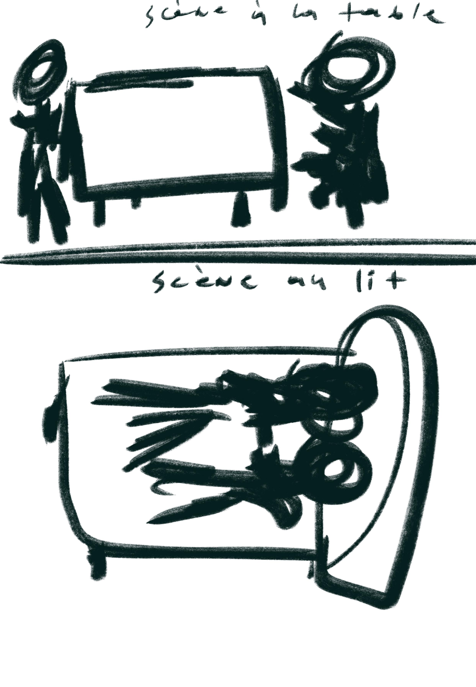
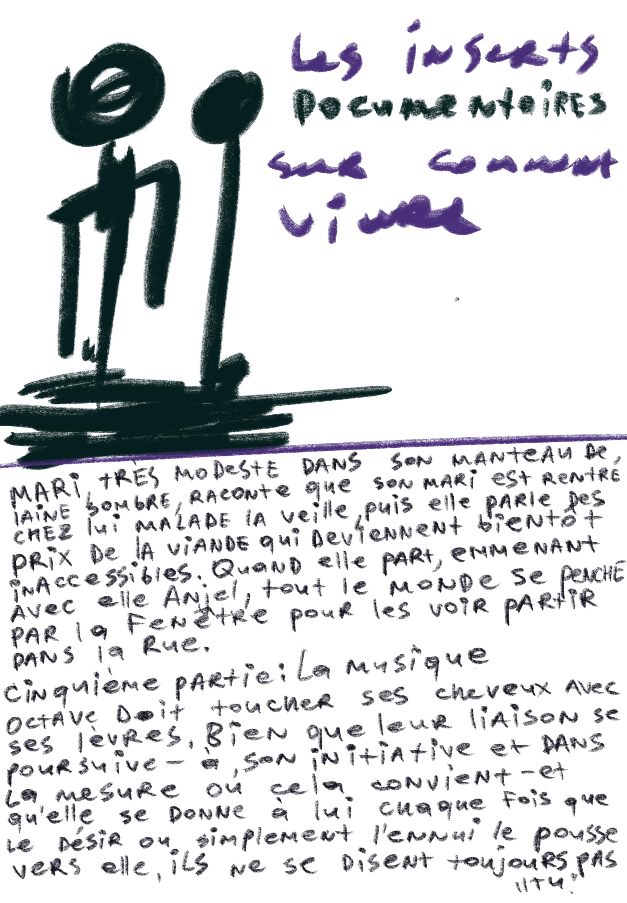
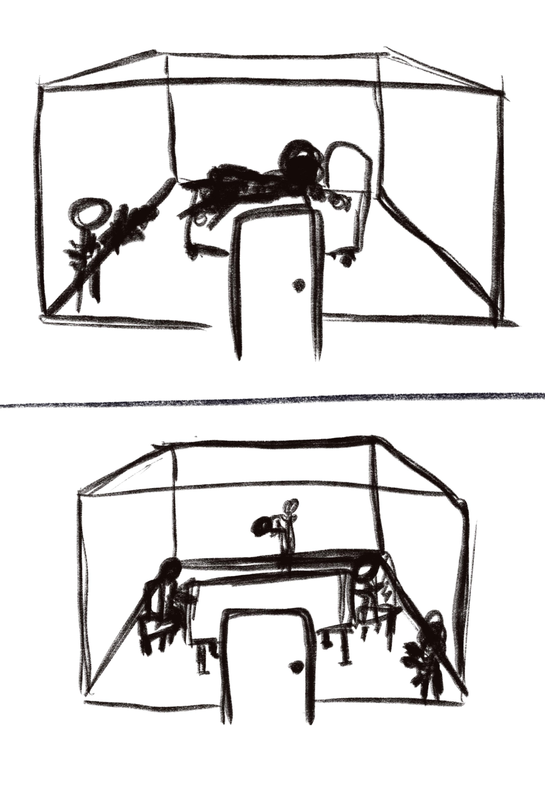
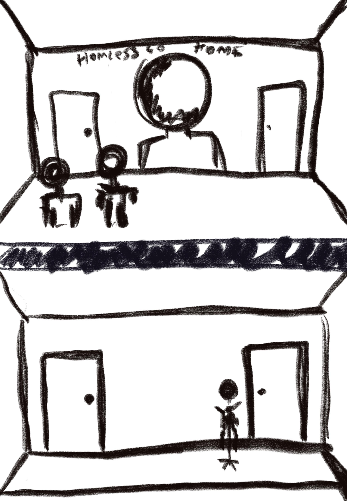
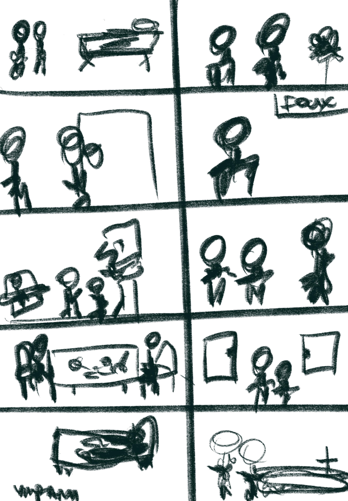
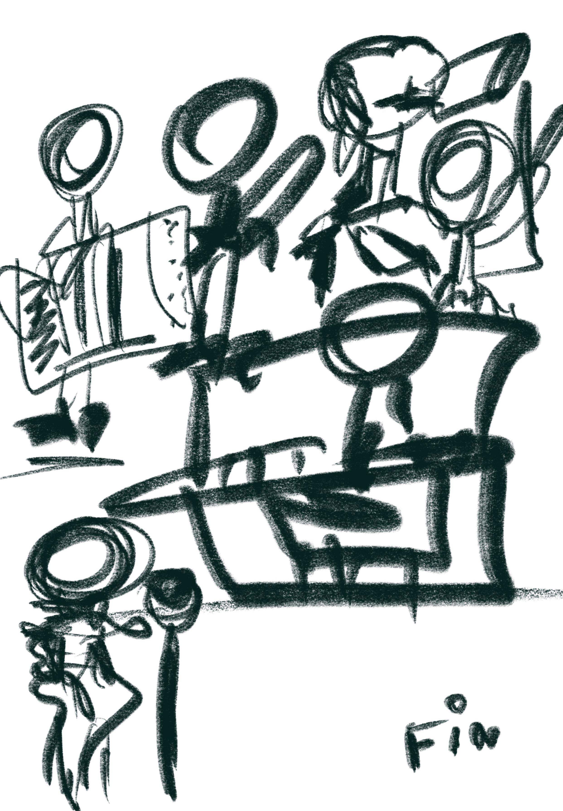

Homeless Go Home spectacle a spectacle спектакль
Un spectacle en deux actes d'apres Emile Zola. Monaco.
A two-act spectacle after Emile Zola. Monaco.
Спектакль в двух актах по мотивам Эмиля Золя. Монако.
scroll
Un spectacle en deux actes d'apres Emile Zola. Monaco.
A two-act spectacle after Emile Zola. Monaco.
Спектакль в двух актах по мотивам Эмиля Золя. Монако.
Quand j'envisage une piece de theatre basee sur l'oeuvre de Zola "La Curee", je trouve que son histoire est tres pertinente meme a notre epoque. La meme incrustation se trouve dans les bouilloires et se retrouve dans nos reins.
Je veux montrer comment les jeunes peuvent venir dans de grandes villes, comme Paris, et commencer a vivre aux depens des autres, en faineant et en trompant. C'est un probleme auquel de nombreux pays, y compris la France, sont confrontes.
Le sujet du parasitisme — je le ressens dans ma propre vie et je vois ou et comment je peux vivre aux depens des autres.
When I envision a play based on Zola's "La Curee", I find its story remarkably relevant to our time. The same buildup found in kettles is found in our kidneys.
I want to show how young people can come to big cities like Paris and begin living at others' expense — through idleness and deception. This is a problem many countries face, France included.
The subject of parasitism — I feel it in my own life, and I see where and how one can live at the expense of others.
Когда я задумываю пьесу по произведению Золя «Добыча», я нахожу, что его история невероятно актуальна и в наше время. Та же накипь, что оседает в чайниках, оседает и в наших почках.
Я хочу показать, как молодые люди приезжают в большие города вроде Парижа и начинают жить за счёт других — бездельничая и обманывая. Это проблема, с которой сталкиваются многие страны, включая Францию.
Тема паразитизма — я ощущаю её в собственной жизни и вижу, где и как можно жить за чужой счёт.

Le premier acte commence par la mort d'un Francais ordinaire et honnete, et tout l'acte se deroule autour de sa mort. L'homme mourant et son entourage.
Les discours ont ete prononces, les derniers mots d'adieu ont ete dits, les pretres ont beni le corps, et tous se sont disperses. Dans ce coin isole du monde, il ne restait plus que les fossoyeurs.
The first act begins with the death of an ordinary, honest Frenchman, and the entire act unfolds around his death. The dying man and his entourage.
The speeches were delivered, the last words of farewell spoken, the priests blessed the body, and everyone dispersed. In this isolated corner of the world, only the gravediggers remained.
Первый акт начинается со смерти обычного, честного француза, и всё действие разворачивается вокруг его смерти. Умирающий и его окружение.
Речи были произнесены, последние слова прощания сказаны, священники благословили тело, и все разошлись. В этом забытом уголке мира остались лишь могильщики.


L'action se deroule dans les memes elements que dans le premier acte. Les morts du premier acte revivent dans un monde de tromperie, de seduction et de parasitisme social.
Scenes-instructions sur comment tromper: la location d'un logement, la rencontre avec une femme mariee, la scene a la table, la scene au lit. Les inserts documentaires sur comment vivre.
The action takes place within the same elements as the first act. The dead from Act One come back to life in a world of deception, seduction, and social parasitism.
Instructional scenes on how to deceive: renting an apartment, the encounter with a married woman, the table scene, the bedroom scene. Documentary inserts on how to live.
Действие разворачивается в тех же декорациях, что и в первом акте. Мёртвые из первого акта оживают в мире обмана, соблазна и социального паразитизма.
Сцены-инструкции о том, как обманывать: съём жилья, встреча с замужней женщиной, сцена за столом, сцена в постели. Документальные вставки о том, как жить.


Comment s'asseoir sur le cou de l'etat? How to sit on the neck of the state? Как сесть на шею государству?

Tous ne sont pas francais, sauf un seul.
None of them are French — except one.
Все они не французы, кроме одного.



L'espace scenique se deploie sur deux niveaux. La chambre s'ouvre et fait egalement partie de l'action — avec les portes fermees, des ombres sont projetees sur les murs. L'action circule entre l'interieur et l'exterieur, entre la vie privee et la facade sociale.
The stage unfolds across two levels. The room opens and becomes part of the action — with the doors closed, shadows are projected onto the walls. The action circulates between interior and exterior, between private life and social facade.
Сценическое пространство разворачивается на двух уровнях. Комната раскрывается и становится частью действия — с закрытыми дверями тени проецируются на стены. Действие перемещается между интерьером и экстерьером, между частной жизнью и социальным фасадом.

